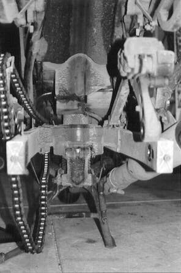
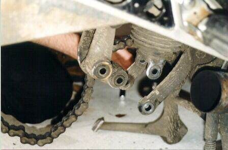
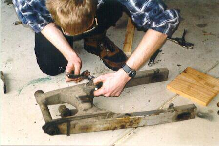
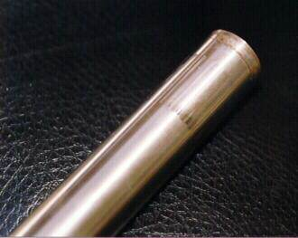
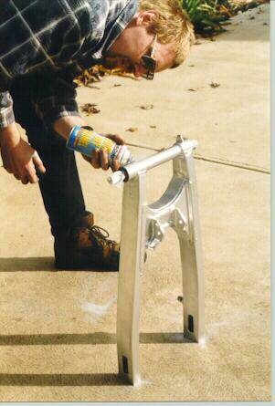
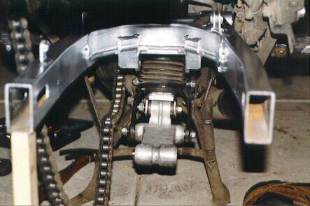

Ideally, you should do this every year or two. I’ve done this to my RC17 a couple of times now, and the difference it made to the bike’s handling has to be felt to be believed.
The first time I did this, the bike was much smoother to ride, and this awful squeaking noise was gone.
You’re probably thinking that I’m crazy to do this. You may be right…
Equipment required:
- 10mm, 12mm, 14mm, 17mm, 19mm, 22mm, 24mm sockets and/or spanners
- Bearing grease (preferably moly-sulphide)
- Plenty of rags, and probably a spot of de-greaser
Step 1: Removing the rear wheel
We need to remove the rear wheel to gain access to the suspension linkages.
Put the bike on it’s centre stand – we can’t use an axle stand as we’ll be removing the swingarm.
Loosen the chain adjuster bolts on each end of the swingarm, and push the wheel as far forward as it will go. Carefully unhook the chain from the rear sprocket, and suspend it from a suitable hook. (I used the rear footpeg hanger.)
Undo the axle nut, and slide the axle bolt out of the swingarm and wheel bearings. You’ll need to support the wheel as you do this. Also be careful of the axle spacers (they tend to fall out when you least expect it), and the rear brake disk will have to be removed from the caliper. Be sure to suspend the caliper from something, to prevent damage to the brake line.
Step 2: Removing the suspension linkages
The next step is to undo the bolt holding the two suspension linkages together, then to remove the bolts holding the linkages to the swingarm and the rear shock absorber.
These bolts all have locking nuts on them, so be prepared to put some serious effort into getting them undone. I found that by getting right into the wheel well, I was able to put enough leverage on the sockets to get them undone. Note also that you may have to loosen or remove the muffler to remove the upper bolt.
Remove the left hand fairing – the little triangular piece beneath the seat, and use a 14mm socket on a long extension bar to undo the shock absorber upper mount bolt. You may need to remove the regulator unit to get proper access.
Remove the shock absorber downwards, taking care not to snag the air hose or damping adjuster cable on the way through. The unit is heavy, so take care to support it properly.
Step 3: Removing the swingarm
Remove the two silver swingarm bolt covers, and loosen the nut. You’ll probably need to hold onto the bolt with a socket.
Gently push the bolt out of the frame, taking care to support the swingarm as the bolt is removed.
Step 4: Cleaning it all
If your bike is as dirty as mine was (stop laughing Mr_T – you ride your bike every day and see how dirty it gets!), then this stage will take some time.
I used a wire brush to remove the caked on mud from the swingarm, the linkages, and the shock absorber. Bolts and nuts were cleaned with a suitable degreaser and left to dry. All bearings were checked for excessive free play, stiffness, and whether they still had any grease in them from the last time I did this.
In all cases, the bearings were in good shape, and still had a good amount of grease in them. There was no obvious amounts of free play, so I elected to simply fill them up with grease and put everything back together. I also decided that it was time to paint my swingarm a nice silver, to hide the ugly stains and blotches of rust-killer.
The swingarm bearing shaft had some obvious wear, but not enough to warrant concern. A gentle polish with extra-fine emery paper would have soon removed the marks, but I elected to leave it as it was.
Step 5: Putting it all back together again
The easiest way to put it all back together again is to simply reverse the order in which it was all taken apart.
So, the swingarm goes back in first, making sure that the bearing shaft is well greased, and can spin freely within the needle bearings. Put a thin film of grease on the swingarm bolt when you put it back in – trying to remove a swingarm bolt that is rusted in place is not something I’d like to try.
Next is the shock absorber. It is possible to do this without help – you just need to have a strong wrist to support the shock whilst you push the bolt into place. Again, grease the shock absorber top mounting bolt before you put it in.
Then the linkages. I can never seem to get them right first time – I usually get one of them backwards or upside down, and have to spend some time reading the service manual. Again, apply a thin film of grease to all the bolts, and make sure that all the ‘bolt tubes’ (the steel tube things that run inside the bearings) can spin freely, and that the bearings have a healthy amount of grease in them.
Finally, the rear wheel is replaced. Don’t forget to hook the chain back onto the sprocket. I find that putting the axle bolt in is a real pain of a job – trying to keep everything lined up, the axle spacers in place, and push the axle bolt into place at the same time is a real prick.
Step 6: Finishing touches
We’re nearly finished – just make sure that all the bolts are done up to their recommended torque values, the chain is correctly tensioned, that you haven’t left big smudges of grease everywhere, and that there aren’t any parts left over.
Pump up the rear shock absorber preload to the desired value, and go for a ride – if you’ve never done the bearings before, you’ll probably notice the improvement in the handling. I certainly did!
The Pictures
Rather than scatter thumbnails all the way through this project report, I thought I’d put them all here in the one place – just to be different to the other projects that I’ve written up.

Before we started – see how dirty everything is. (The stupid scanner software decided that this was actually a black and white photo, not a colour one.)

The bottom bolt of the suspension linkage has been removed – note that I had to remove the muffler to get better access to the area.

The swingarm is out, and I’m getting it ready to be cleaned and painted.

The swingarm bearing shaft, showing the wear marks from the needle bearing. These marks would polish out with a little bit of work.

Picasso eat yer heart out! One grotty, dirty swingarm becomes shiny silver within seconds.

The swingarm is back in place, and the linkages are about to be put into place.